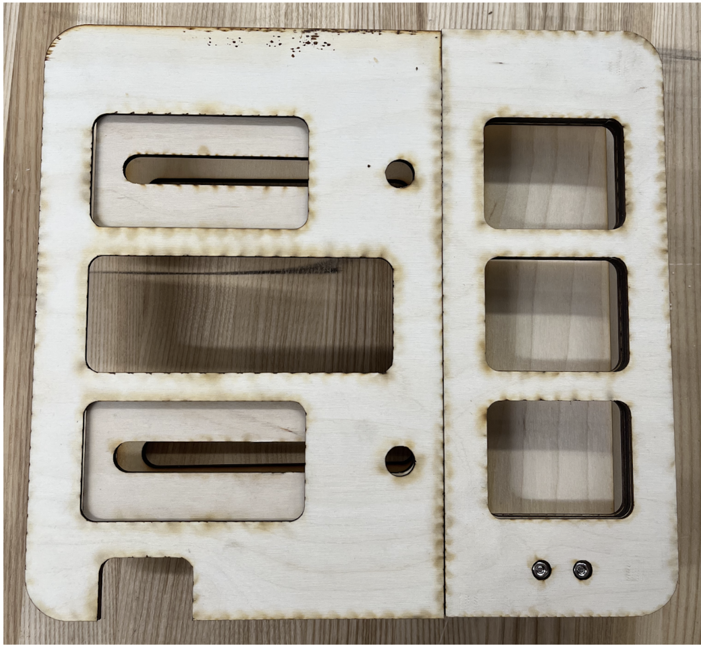
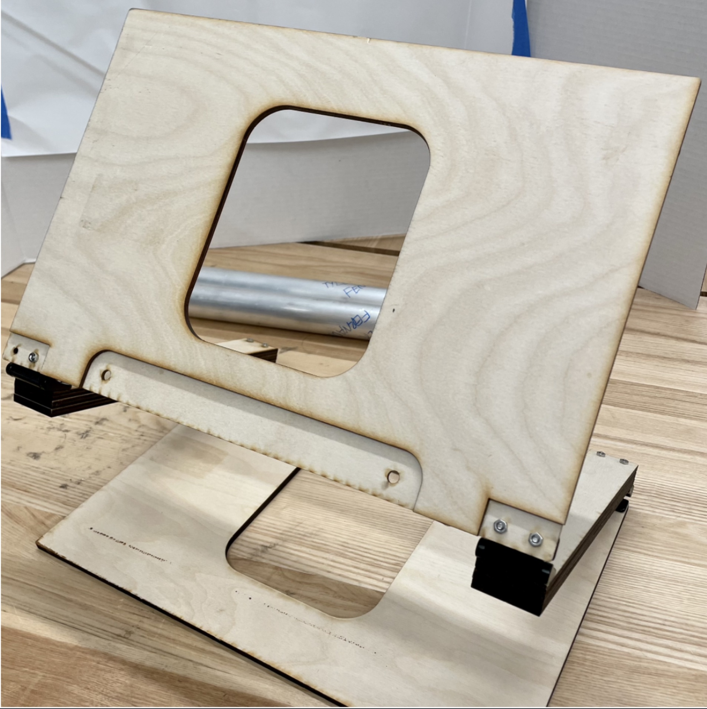
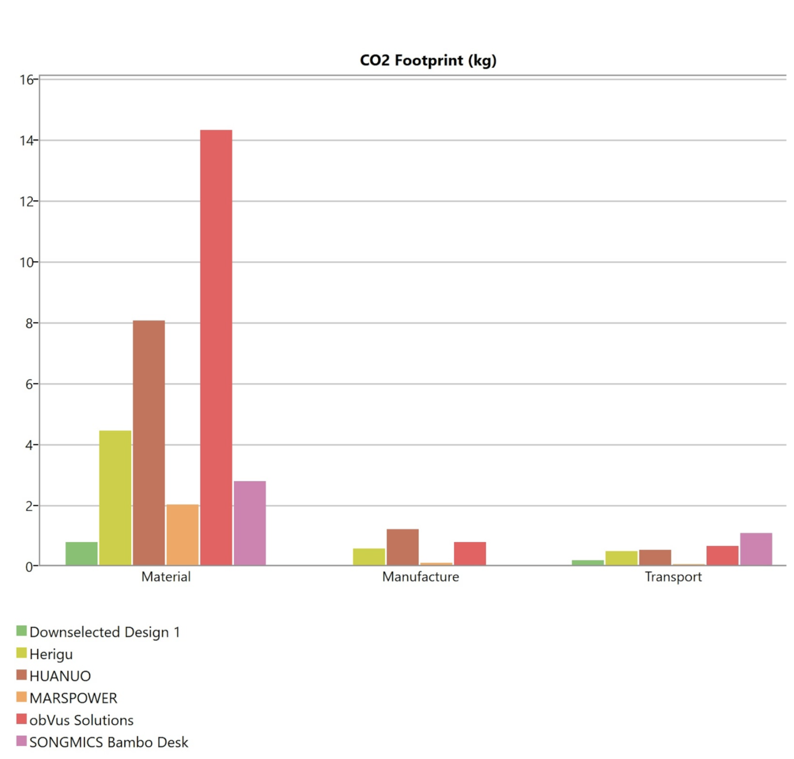

PORTFOLIO
One of many initial sketches and 3D printed design to test hinge mechanism
 Laser cut prototypes of designs A & B

Eco anaylsis of final design vs market & final prototype
Problem:
- Most laptop stands on the market are not environmentally friendly
– Those that are tend to be expensive, non-portable, and unadjustable
– Professor Amini wanted a product that would be environmentally friendly, portable, and adjustable
– Additional requirements were added
– Must be competively priced
– Sustainable manufacturing
– Good thermal dissipation
Action:
– As a team performed background research in market to see pitfalls of other projects as well as IP research
- Decided upon materials using eco analyses to determine best for use
– Created a design matrix to influence potential designs
– Narrowed down design choices through sketching, protoyping, and testing
– Ordered final protypes made of bamboo
– Tested final two protpypes and selected final design
Result:
– Created functional protoype of design
– Able to be mass produced and sell at a competitive price point
– Easy to use, lightweight, portable, ergonomic
- Client more than happy with design
Roadblocks encountered:
– University router was never setup so the machining was outsourced while 3D printed models were made in house
– Final designs came back warped from amchine shop, removed warping with water, weights, and heat
Future steps:
– Design custom hinges to allow for a slimmer profile and lower cost
– Add lower supports to alleviate excess wobbling
All work done by Nina Bellusci, Maeve Gaus, Sara Kamboj, Rebecca Teslyar, and Aidan Winter. Design Advisor Dr. Rouzbeh Amini.